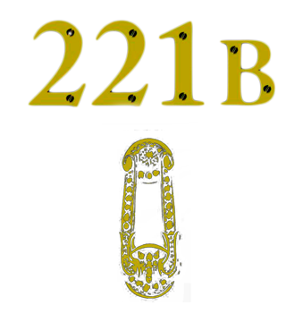

Who Are You ?
Why So Serious ?
How I Contat Ya ?
Who Are You?
Testando commit testando
1,60 de 21 longos anos estampados em minha identidade, cabelo médio e cacheados, olhos castanhos escuros e um tio do pavê enraizado em minha alma. Eu sou Andy, Xandy, Ninfadora ou mesmo Andrielle. Diversas facetas de um mesmo rosto e diferentes nomes para expressar uma única pessoa. Acredito que apenas me conhecendo para que consiga responder essa pergunta, então separei aqui algumas frases daqueles que mais me conhecem.
Essas são falas das pessoas mais importantes da minha vida disseram sobre mim, totalmente fora do contexto, embora ainda se tem uma ideia de quem sou. Responder essa pergunta requer respostas além da minha e quis trazer um pouco disso ao fazer essa imagem. É muito curioso parar e ver, reler ou lembrar de conversas onde o outro diz o que acha de você, e o quanto isso possa ser diferente da imagem que você tem de si mesmo. Seja para caractéristicas prejudiciais ou para as agregadoras, sou um pouco disso tudo, um pouco de mim e um pouco de quem continuamente vai se alternar num outrem.
Feito por xandyninfadora com a ajuda de todos e benção da lenda, Haninho.